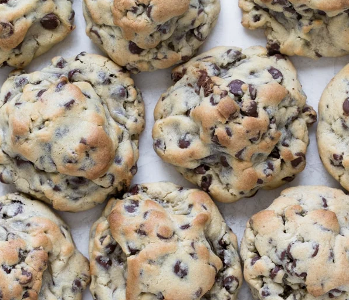

Home
Kroll's Choc Chip Kookies Recipe

Seriously once you make these you'll be forwarding the recipe to your mom, sister, grandma, Aunt, cousin, best friend, third cousin twice removed and tell them it's the best giant chocolate chip cookie you have ever had in your life
Ingredients
- 1 1/4 cup AP flour
- 3/4 cup cake flour
- 1 tsp corn starch
- 1/2 tsp baking powder
- 1/2 tsp baking soda
- 1/2 tsp salt
- 1/2 cup cold unsalted butter
- 1/2 cup packed brown sugar
- 1/4 cup white granulated sugar
- 1 large egg
- 1 Egg Yolk
- 1 tsp vanilla extract
- 2 cups chocolate chips
Method
Preheat oven to 205c. Whick together AP flour, cake flour, baking soda, baking powder, cornsarch and sea salt together in a large bowl. Set aside
- Place cubed butter into a bowl of a stand mixer and secure the paddle attachment. Turn the mixer on a medium-low setting.
- Let the mixer cream the butter for 30 seconds, adding the brown suger and mix for a further 30 seconds followed by the white sugar for another 30 seconds. Cream until light and fluffy then add in the egg, egg yolk and vanilla essence. Blend until mixed.
- With the mixer on a low speed gradually add in the flour mixure. Add it in a little at a time until the ingredients are incorporated. Add in chocolate chips and mix until choc chips are just incorporated
- Measure out ~6 150g cookies. Either use a food scale for this or you can eyebal. Cookies should be a little smaller than a fist. Don't flatter cookies, you want them to be tall. Place cookies on baking sheet lined with parchment paper.
- Bake cookies for 10-12 minutes or until the tops are golden brown. The secret is to pull them out before you think they're done.
- Let cookies rest on the baking sheet for atleast 15-30 minutes. Place cookies on a cooling rack to completely cool.
Return to top